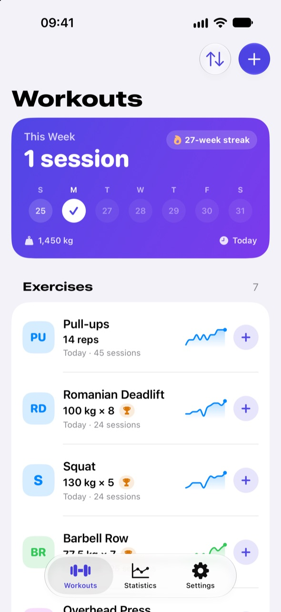
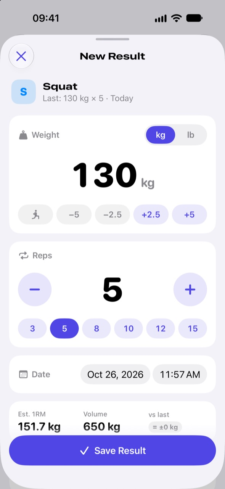

Training Tracker
A bold, fast strength log for iPhone. Log a set in one tap, celebrate every personal record and watch each lift grow.

Everything between two sets
Training Tracker is made for the gym floor: quick to log, clear to read and honest about your progress.
Log a set in seconds
Every set starts from your last one, so repeating it is a single tap. Plate steps, rep presets and a bodyweight switch make any change quick.
Celebrate every record
New bests in weight, estimated 1RM or reps are spotted while you type and celebrated with confetti. Records shine in gold.
See how you improve
Charts for weight, estimated 1RM, volume and reps, from one week to all time. Drag across them to inspect any day.
Rest, then next set
A rest timer starts after every set. Tap Next set to log the following one, already prefilled, and keep the workout flowing.
Keep the streak
The This Week card counts your sessions and your week streak. Statistics adds volume trends and an 18-week consistency map.
Widgets everywhere
Your week, your streak and any exercise’s trend on the Home Screen and Lock Screen. Tap + to jump straight to logging.
A closer look

Private by design
- No account and no sign-up
- No ads, analytics or tracking
- Works fully offline
- Syncs through your own iCloud
- Export to CSV whenever you like
Made for you
Kilograms or pounds, light or dark, and seven languages. The app follows your iPhone’s language or the one you pick in Settings, and so do its widgets.
Start your training log
Training Tracker is on the App Store for iPhone. Requires iOS 18.5 or later.
Download on the App Store